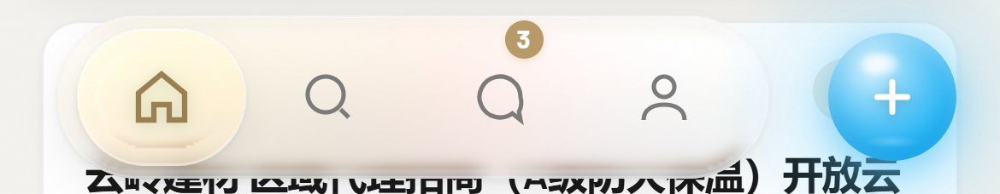
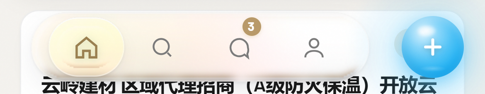
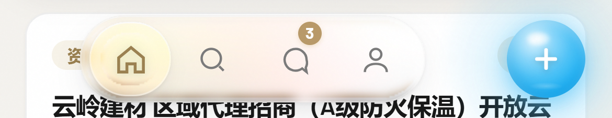

iPhone 390×844 逻辑像素，3× 截图，三者同一裁切框（整条 390px 导航带，含右侧禁改的 AI 球）



| 指标 | 1-原始 | 2-上一轮 | 3-现在 |
|---|---|---|---|
| Dock 宽 × 高 | 278.0 × 64.0 | 272.0 × 56.0 | 220.0 × 56.0 |
| 图标尺寸 | 24.0 | 21.0 | 21.0 |
| 图标中心间距 | 65.5 | 61.0 | 52.0 |
| 端边距（玻璃缘→图标缘） | 28.8 | 34.0 | 21.5 |
| 选中玻璃块 宽 × 高 | 65.5 × 54.0 | 61.0 × 48.0 | 52.0 × 48.0 |
| 左侧留白 | 22.0 | 25.0 | 51.0 |
| Dock ↔ 球 | 18.0 | 21.0 | 47.0 |
| 右侧 AI 球 宽 × 高 | 60.0 × 60.0 | 60.0 × 60.0 | 60.0 × 60.0 |
第 2 态是我上一轮造成的：为了让 Dock 不贴玻璃边，我把内边距从 8px 加到 14px，
端边距反而从 28.8 涨到 34.0 —— 就是那之后被指出的「左右边距较大」。
第 3 态把 Dock 从 flex:1 撑满改为定宽 220 + 居中：间距与端边距同时收紧，代价是 Dock 周围留白变大（球不能动）。